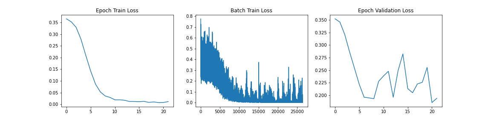
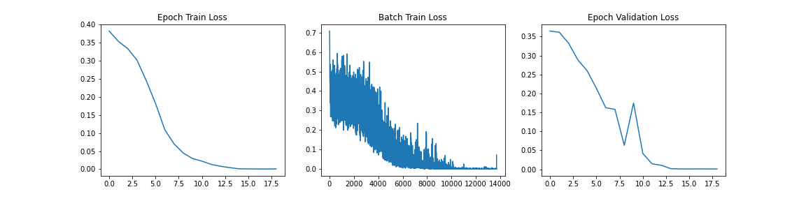

Image classification in the Medical Domain
Top image classification models work well on the major datasets, but how do they perform on CT scans?
Project Final Report
Introduction
We want to answer the question of whether SOTA image classification models can perform well on not only the common ImageNet benchmark, but also in more specific and specialized domains. We chose to test the most common image classification model currently, ResNet[2], and compare its performance to a more modern approach, Vision Transformers[1], in a biomedical application. We found a dataset in a Kaggle competition through the RSNA (Radiological Society of North America) that contains CT scan images of cervical spines of 3000 subjects around the world.The objective is to detect fractures in the cervical spinal CT scans. These images present different problems as the task of classification is tough for highly trained humans let alone machine learning models. One aspect that we hope to understand in addition to the performance of training the models on CT scans is to understand if a pretrained model that has high in classification accuracy on the ImageNet dataset provides a suitable checkpoint to finetune the respective models for the CT Cervical Spine Fracture test.
Background
We are basing our project of An Image is Worth 16x16 Words: Transformers For Image Recognition At Scale[1]. The paper’s main claim is that the reliance on current state of the art CNNs is not necessary and that a pure transformer applied directly to a sequence of image patches can perform very well on image classification tasks. The paper finds that Vision Transformers (ViT) produced excellent results and required fewer computational resources to train compared to CNNs. Our main question, aforementioned, is to see how ViT will perform in a biomedical application. The paper shows that with ImageNet and other popular image datasets that ViT can be better, and so we wanted to expand on this and try a more niche image type and see if that trend continues. This paper’s results set the foundation for our question and we try to recreate the same successful results in a different context.
Methods
Data Pre-Processing
The main goal for data preprocessing is convert the original data from the dataset, which was in the form of axial view DICOM (Digital Imaging and Communications in Medicine) scan images, to sagittal view JPG scan images. Luckily, there is a library already created in Python that we were able to import in order to manipulate the DICOM images.
Pydicom was introduced in 2017 and is the leading library for medical image datasets, storage and transfer. Although not complete, the documentation is very thorough and useful in our use case. This library can directly view and manipulate the data from the DICOM information. From the documentation and resources taken from previous work done on kaggle, we were able to find a suitable method for taking the axial scans of one patient and putting them together to extract sagittal view images.
The process for our conversion, for a single image, is simplified into the following list of steps:
- Sort each slice of the 2-D Axial DICOM image in order.
- Create a pixel spacing to slice thickness ratio.
- Create empty 3-D array and fill with slices and pixels from the DICOM image
- Multiply the 3-D array with a sagittal aspect ratio to get sagittal view
- Flip array and rotate (transpose) to get the correct sagittal view.
Below are examples of three different patients. The first image is the axial view from the center of the spine. The second image is the center most slice of our converted sagittal view:


Data Augmentations
To train the model, we had to generate the relevant PyTorch Datasets and Dataloaders along with making sure that the data in the classes were prepared for the model. One thing, as mentioned before, that we noticed in the data preprocessing stage was that the method for converting an axial scan created images with non-uniform size. A common requirement for most dataloaders in PyTorch is that they require the input data in the batch tensor to contain the same amount of data per element in the batch. Because of the way that pytorch tensors work generally, they do not allow for variable size inside their tensors. To combat this problem we would need to augment the images to ensure uniform size. To do this, we found the Albumentations library which provides a significant library of image augmentations that may be used for preparing data for a deep learning. In the case of the variable image size, Albumentations provides a PadIfNeeded method that takes each image and pads it on the borders based on the maximum size expected for both width and height. We elected for padding rather than resizing to reduce the amount of raw pixel transformation that we do in the image as these raw pixels from the CT scan contain important pattern information that could be lost from resizing. This method was one of the only kinds that could be found regarding variable image size padding and was thus a major help in allowing us to use the sagittal images rather than needing to revert to the original axial images. For the image augmentations on the training samples we did the following:
- Pad images (If needed) to fit size (768, 1082).
- Normalize RGB values to values between 0 and 1.
- Convert the resulting image to the PyTorch Tensor format (C, H, W).
The intention of this data augmentation pipeline is to prepare the images for the training loop as well as to ensure the best performance of the model.
Model Training
For the model training, as mentioned before, we utilized the implementations from HuggingFace. HuggingFace provides an implementation of both ViT and ResNet models that can be trained from random initializations on any sort of image classification task. It also provides the pretrained checkpoints of various pretraining experiments that are carried out by individuals or teams. In this case, we utilized the google/vit-base-patch16-384 checkpoint for ViT and the microsoft/resnet-50 checkpoint for the ResNet.
For the models that we used, some alteration was needed to make sure that we are able to use the model for our classification task. The original model checkpoint contained an output layer with 1000 logits for the 1000 ImageNet classes. The first step for this that we did was to update the output layer to fit the 8 possible classes (1 patient overall fracture class, 7 C1-C7 fracture classes). Additionally, since the previous model only predicted a single class out of many classes, a loss function with softmax builtin would be sufficient to calculate the class probability. However, in our case, we needed to allow for multilabel predictions. As a result, rather than applying softmax function to the logits, we instead used the sigmoid function on each logit to calculate its probability for whether or the label that it represents is predicted for that sample. Finally, in the training loop, cross entropy is commonly used for the loss function on many standard multiclass expreiments.
Below are the hyperparameters that were using during our training loops:
| Hyperparameter/Optimizer | Value |
|---|---|
| Loss Function | Binary Cross Entropy |
| Learning Rate | 3e-05 |
| Batch Size | 12 |
| Optimizer | Adam |
| Adam Betas | (0.9, 0.999) |
| Adam Epsilon | 1e-08 |
| Epochs | 50 |
| Learning Rate Sceduler | Linear |
| Hyperparameter/Optimizer | Value |
|---|---|
| Loss Function | Binary Cross Entropy |
| Learning Rate | 0.5 |
| Learning Rate Sceduler | Cosine Annealing |
| Learning Rate Warmup Epochs | 5 |
| Learning Rate Warmup Method | linear |
| Learning Rate Warmup Decay | 0.01 |
| Batch Size | 20 |
| Optimizer | SGD (Stochastic Gradient Descent) |
| SGD Momentum | 0.9 |
| Weight Decay | 2e-05 |
| Epochs | 25 |
These hyperparameters match the settings that were used during the pretraining checkpoint. Although we had to adjust some things like the batch size based on thes size of the GPU compute resources we needed. Additionally, as we will see, the models did not always need the full amount of epochs during training. The code for training both of these models can be found in the notebooks folder of the repository for this project.
Results
Model Training Statistics
During the training loop progress for each of the models, we collect Epoch Training Loss, Per Batch Training Loss and Epoch Validation loss. These provide some insight into the progress that the model is making towards minimizing the error in the objective loss function. Below the results of those for each model are shown: When we analyze these graphs, it is fairly apparent that we are seeing some sort of convergence on the model with the training loss gong to near 0 at approximately 10 epochs. One thing that we do notice that may suggest overfitting in this case for ViT is the large jagged peaks in the Epoch Validation graph. This suggests that changes made by backpropagation at each epoch is causing inconsistent validation performance and likely not learning the functionality of spine fracture detection and rather some other feature recognition. We will analyze the performance further with a holdout test set to evaluate the performance of the data on a new dataset that it has never seen before.
Similar to the last graph, we see the model converging with a near-zero training loss at approximately 10 epochs. In this case however, we do not see the jagged validation loss that we saw in the case of the ViT model. This suggests that we are not necessarily overfitting. However we will only know the trust performance when we evaluate the model on a holdout set.
Test Results
As mentioned above, to test the performance and generalization of the two models, we have a holdout test dataset of 3 patient scans. These images were fed into the model in inference mode using the same sagittal transformation and image augmentations described in the methods section. Each of the 3 patients had the same C1 fracture so we were looking for the same classification output from the model for all the images passed in.
From the ViT, we passed approximately 300 CT scan samples from the 300 patients and received 5 correct predictions. This performance is plausible given that we see symptoms of overfitting in the validation graph. Below are the images that were correctly predicted from the holdout test set

One thing that we notice in thise cases is that 3 of the images in the set of correct predictions do not fully display the cervical spine. This means that the correct prediction is coming for the image even without the features that we are expecting. More investigation may be needed to be able to fully understand what the reason for this output may be, but in the case of the features and performance of the model, we cannot confidently say that the ViT has learned the ability to detect spinal cord fractions.
When we look at the ResNet model, the trained model actually did not predict any correct test samples. This is a counterintuitive result because we see many of the signals during training that suggest a well generalized model based on the validation loss. An option for us to investigate this failure in inference would be to look at the class activation mapping visualization that we saw before
Slides
A PDF of the slides for the presentation given on the Final Project Fair can be found under the slides directory of this project.
References
[1] Dosovitskiy, A., Beyer, L., Kolesnikov, A., Weissenborn, D., Zhai, X., Unterthiner, T. & Houlsby, N. "An image is worth 16x16 words: Transformers for image recognition at scale". arXiv preprint arXiv:2010.11929, 2020.
[2] He, K., Zhang, X., Ren, S., and Sun, J., "Deep Residual Learning for Image Recognition", arXiv preprints arXiv:1512.03385, 2015.
[3] Ashish Vaswani, Noam Shazeer, Niki Parmar, Jakob Uszkoreit, Llion Jones, Aidan N Gomez, Łukasz Kaiser, and Illia Polosukhin. "Attention is all you need." In NIPS, 2017.
[4] Niki Parmar, Ashish Vaswani, Jakob Uszkoreit, Lukasz Kaiser, Noam Shazeer, Alexander Ku, and Dustin Tran. "Image Transformer". In ICML, 2018.
[5] Josip Djolonga, Jessica Yung, Michael Tschannen, Rob Romijnders, Lucas Beyer, Alexander Kolesnikov, Joan Puigcerver, Matthias Minderer, Alexander D’Amour, Dan Moldovan, Sylvan Gelly, Neil Houlsby, Xiaohua Zhai, and Mario Lucic. "On robustness and transferability of convolutional neural networks". arXiv:2007.08558, 2020.
Team Members
Aniket Lachyankar (lachyankar.a@northeastern.edu) and Satwik Kamarthi (kamarthi.s@northeastern.edu)